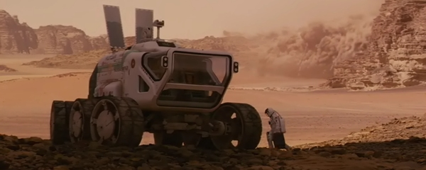
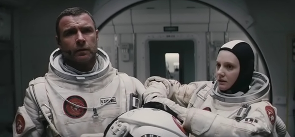
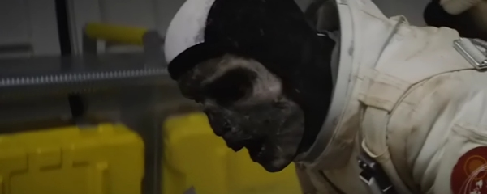

The Last Days on Mars is a science fiction horror film based on the short story 'The Animators' by English author Sydney James Bounds.
The story takes place at the Tantalus Base outpost, a Martian research base created in the 2040s. The eight person crew, who have been stationed on Tantalus for the past six months, are only nineteen hours from the completion of their research mission and pickup by the spacecraft Aurora for the return journey to Earth.
With only a few hours to the rendezvous, one of the crew members, scientist Marko Petrovic believes he has made an amazing discovery - fossilised evidence of bacterial life. Unwilling to let the others participate in the glory, Marko comes up with a ruse for one last expedition on the surface, without revealing his important discovery. Crewmate Richard Harrington drives Marko in a rover to the spot where he had previously found the fossils. While collecting further samples, the unstable sandy ground collapses and Marko falls into a deep crevice.
Captain of the Mars outpost, Charles Brunel (Elias Koteas) and another crewmate Lauren Dalby drive another rover to the place of the accident, with a plan to explore the chasm and retrieve Marko's body. They however lack the necessary equipment, therefore Lauren remains at the crevice and Captain Brunel returns to the main outpost to bring the required kit. When the rover returns, they find that Lauren vanished too. Captain Brunel authorises yet another crew member, Vincent Campbell (Liev Schreiber) to descend the chasm and look for Marko and Lauren. Vincent is unable to locate any bodies, but finds a fungus-like life form that grows at the bottom of the crevice.
Horrific for all the bad reasons, this film is 98 minutes of pure agony
In the meanwhile Marko and Lauren, far from being dead, reappear at the main outpost, mutated by the spores of the fungus into fast, aggressive, zombie-like creatures with blackened skin and no trace of their original personalities. Richard Harrington dies in a power drill attack and also turns into one of these creatures. The remaining crew hold off the 'zombies' while Captain Brunel and Vincent return from the chasm. On their return, also Captain Brunel is fatally injured and reanimates, providing the crew with some insight into the initial symptoms of the infection: thirst, memory loss, and aggression.
One by one, members of the Mars outpost succumb to the waves of the 'zombies'. In the meantime, spacecraft Aurora lands and its crew too, unaware of what is happening on the ground, succumbs to the infection, after being boarded by one of the 'zombies' from the Mars outpost. The last remaining survivors, Vincent Campbell and, obviously infected, Robert Irwin board the Aurora lander and Robert initiates a launch, which takes them into orbit. In an ensuing fight, Vincent kills Robert and ejects his body into space. Being the last survivor, and showing potential symptoms of the infection, Vincent sends a message to the mission control, where he describes the incident and advises that it might not be advisable to launch a rescue mission as they too may get infected.
It is extremely difficult to say anything positive about this calamity of a film. To be completely objective, the Mars rovers, Mars landscape and sandstorms were recreated rather realistically and the performance

of Liev Schreiber as an astronaut Vincent Campbell was quite credible. Anything else on the plus side? Ahem, no.